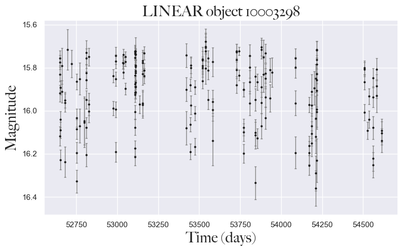

Code
%load_ext autoreload
%autoreload 2In this notebook we discuss the access of LINEAR data, selection of RR Lyrae stars and the subsequent access and processing of ZTF data for the corresonding LINEAR stars.
%load_ext autoreload
%autoreload 2# IMPORTING LIBRARIES
# --------------------
# AstroML
from astroML.datasets import fetch_LINEAR_sample
from astropy.timeseries import LombScargle
from astroML.datasets import fetch_LINEAR_sample
from astroML.datasets import fetch_LINEAR_geneva
from astropy.timeseries import TimeSeries
from astropy.table import Table
from astroML.time_series import MultiTermFit
# ZTF
from ztfquery import lightcurve
# Basic libraries
import pickle
import os
import sys
from tqdm import tqdm
# Plotting
import seaborn as sns
from matplotlib import pyplot as plt
from matplotlib import ticker
import matplotlib.colors as mcolors
from matplotlib.font_manager import FontProperties
# DataFrame analysis
import pandas as pd
# Math libraries
import numpy as np
import scipy as sc
from scipy.stats import norm
# CONFIGURATION
# -------------
sns.set_theme() # setting the theme for plotting
sys.path.insert(0,'../src/')
np.random.seed(42)
# configuring plotting colors
colors = ['#5F6372', '#79A8A4', '#B2AD8F', '#92A186', '#AD8082']
blue = '#5F6372'
turqoise = '#79A8A4'
light_green = '#B2AD8F'
green = '#92A186'
pink = '#AD8082'
cmap = mcolors.ListedColormap(colors)
# configuring fonts for plotting
font = FontProperties()
font.set_family('avenir')
font.set_name('Big Caslon')
font.set_style('normal')
font.set_size('xx-large')
%matplotlib inline # Importing custom libraries
# ----------------------------
from data_access import*LINEAR dataLINEAR datasetThe LINEAR dataset (Lincon Near-Earth Asteroid Research) contains 7010 light curves of periodic variable stars. While the original mission of this survey was to find asteroids, it subsequently monitored a substantial portion of the sky, cataloging the brightness of various variable stars. This survey was operated with two telescopes on a site in New Mexico. The two telescopes are equatorially mounted of GEODSS type, where each telescope is denoted as L1 and L2. They observed a broad part of the visible spectrum and the near-infrared spectrum.
The preprocessing process contained the following procedures: 1. Bias correction: removing noise created by the camera 2. Flat-field correction: removing artificial lines and gradients due to varying sensitivities of pixels 3. Preliminary fixed-aperture photometry: subtracting the background light using Poisson statistics
After preprocessing, the data had to be astrometrically recalibrated, meaning that the scientists had to ensure the coordinates of the objects in the data matched another survey, like SDSS. Of all the data, 7% had bad astrometry (the coordinates did not fit), so the scientists removed them from the dataset. The rest of the data had a 1-2% error in astrometry.
Next up was photometric recalibration, meaning that the filters and fluxes had to be recalibrated to match SDSS data. The corrections regarded CCD camera errors, correcting the magnitudes of objects in the data, and correcting underestimated magnitude errors. After the photometric recalibration, the data were grouped into various categories, including a variable star category. While the original dataset has 5 billion objects, only 7010 are confirmed periodic variable stars. The scientists subsequently analyzed this portion of the dataset by categorizing the light curves, calculating their periods, and inferring conclusions from the preceding factors.
LINEAR dataWe can access the LINEAR dataset via one line of code since we are downloading the data from the AstroML library.
# LINEAR DATA
# ------------
dataL = fetch_LINEAR_sample(data_home='../inputs')print(f'The number of light curves in the LINEAR dataset:{len(dataL.ids)}') The number of light curves in the LINEAR dataset:7010# Plotting an example of a LINEAR light curve
ID = dataL.ids[0] # accessing the first LINEAR ID
lc = dataL.get_light_curve(ID)
time, mag, magerr = lc.T # transposing the data
#--------
# accessing the coordinates for the star
targets = dataL.targets[0]
ra, dec = targets[3], targets[4]
#--------
fig, ax = plt.subplots(1,1, figsize=(9,5)) # creating subplots with 2 columms and 3 rows
ax.errorbar(time, mag, magerr, fmt='.k', ecolor='gray',lw=1, ms=4, capsize=1.5)
ax.set_xlabel('Time (days)',fontproperties=font)
ax.set_ylabel('Magnitude', fontproperties=font)
ax.set_title('LINEAR object {0}'.format(ID), fontproperties=font)
ax.invert_yaxis()
plt.show()
LINEAR dataThe structure of the LINEAR dataset is as such: 1. dataL is a AstroML.datasets object and it contains the following:
1.a dataL.ids is a list of all the IDs of the stars
1.b dataL.get_light_curve() is a function which acceses the data for a specific ID of a light curve every light curve is a np.array() object where every column is time, magnitude and the magnitude error. In order to get an array for every column the original array must be transposed.
dataL.targets contains all of the metadata for every light curve eg. rectascension, declination, etc.LINEAR_periods = select_good_LINEAR(dataL)
print(LINEAR_periods.shape)
LINEAR_periods.head()(5204, 14)| ra | dec | ug | gi | iK | JK | logP | Ampl | skew | kurt | magMed | nObs | LCtype | LINEARobjectID | |
|---|---|---|---|---|---|---|---|---|---|---|---|---|---|---|
| 0 | 119.526443 | 46.962120 | 1.166 | 0.369 | 1.018 | 0.269 | -0.254138 | 0.619 | -0.313 | -0.567 | 16.37 | 301 | 1 | 29848 |
| 1 | 119.324013 | 47.095505 | 1.356 | 0.521 | 1.167 | 0.311 | -0.244691 | 0.709 | -0.493 | -0.997 | 15.02 | 289 | 1 | 32086 |
| 2 | 119.712975 | 52.149574 | 1.175 | 0.386 | 1.100 | 0.205 | -0.191591 | 0.487 | -0.291 | -0.879 | 16.46 | 284 | 1 | 50402 |
| 3 | 118.491257 | 53.168125 | 0.805 | 0.554 | 1.618 | 0.198 | -0.178900 | 0.695 | -0.026 | -1.059 | 14.08 | 274 | 1 | 61011 |
| 4 | 119.187241 | 53.379295 | 1.123 | 0.207 | 1.074 | 0.210 | -0.275092 | 0.624 | -0.547 | -0.322 | 16.54 | 276 | 1 | 62892 |
LINEAR_periods.to_csv("../outputs/LINEAR_RRLR.csv", index=False)Lrrlyr = LINEAR_periods[(LINEAR_periods['gi']>-0.5)&(LINEAR_periods['gi']<0.4)&((LINEAR_periods['LCtype']==1)|(LINEAR_periods['LCtype']==2))] # RR lyrae type
Lrrlyr = Lrrlyr.reset_index(drop=True)
Lrrlyr.to_csv('../outputs/Lrrlyr_unprocessed.csv',index=False)
Lab = Lrrlyr[Lrrlyr['LCtype']==1] # RRab type
Lc = Lrrlyr[Lrrlyr['LCtype']==2] # RRc type
print(len(Lab), len(Lc))
Lrrlyr.head()2196 745| ra | dec | ug | gi | iK | JK | logP | Ampl | skew | kurt | magMed | nObs | LCtype | LINEARobjectID | |
|---|---|---|---|---|---|---|---|---|---|---|---|---|---|---|
| 0 | 119.526443 | 46.962120 | 1.166 | 0.369 | 1.018 | 0.269 | -0.254138 | 0.619 | -0.313 | -0.567 | 16.37 | 301 | 1 | 29848 |
| 1 | 119.712975 | 52.149574 | 1.175 | 0.386 | 1.100 | 0.205 | -0.191591 | 0.487 | -0.291 | -0.879 | 16.46 | 284 | 1 | 50402 |
| 2 | 119.187241 | 53.379295 | 1.123 | 0.207 | 1.074 | 0.210 | -0.275092 | 0.624 | -0.547 | -0.322 | 16.54 | 276 | 1 | 62892 |
| 3 | 120.294960 | 40.932457 | 1.180 | 0.237 | 1.087 | 0.368 | -0.170871 | 0.753 | -0.121 | -0.927 | 15.39 | 177 | 1 | 91437 |
| 4 | 120.124542 | 40.656620 | 1.178 | -0.145 | 0.835 | 0.277 | -0.503252 | 0.550 | 0.140 | -0.650 | 16.98 | 222 | 2 | 95250 |
We now have 2941 RR Lyrae stars from the LINEAR database. We can differentiate them further into RR Lyrae AB and RR Lyrae C types, but this can be done later (we just have to conserve the LCtype column).
ZTF dataZTF dataThe Zwicky Transient Facility is an optical time-domain survey that uses the Palomar 48-inch Schmidt telescope to observe the entire Northern hemisphere sky in 3 different bands: g, r, and i, and has been operating since October 2017. This telescope has a large field of view, taking in a lot of data.
All the data gathered by ZTF is stored at the IPAC, which can be accessed via IRSA, as shown in this project. All of the raw data was processed so that every pixel had an average of 5 bits, and although this increased sky noise by 1%, the increase is negligible. All the images were FITS images which the program processed in the following way:
Preprocessing: removing bias frames and flat field correction frames.
Astrometry: Using the SCAMP package, all objects were astrometrically calibrated to match the GAIA survey.
Photometry: All images were photometrically calibrated following the PanSTARRS 1 survey.
Final processing: Finally, masks were made for saturation, bad pixels were removed, ghosts and any instrumental artifacts, and other defects.
Every image was then categorized as either a moving or a changing source using the ZOGY algorithm. Furthermore, point-like moving objects were identified using the custom ZTF Moving-object Discovery Engine (ZMODE).
ZTF was able to observe the following objects:
1. Transient objects
These objects are supernovae found in other galaxies, and the ZTF survey captured their light curves.
2. Neutrinos and gravitational-wave events
The ZTF survey showed that scientists could use ZTF in the future to undertake observations of neutrinos and gravitational-wave events.
3. Variable objects
These include variable stars but also light curves of asteroids. The light curves in the ZTFdataset were built upon every few months, and the light curves were stored in HDF5 match files per each field of observation. ZTF contains many light curves, and some most notable types are Be stars, RR Lyrae stars, light curves of NEOs, Asteroids, and the activity of Comets and Centaurs.
The ZTF data is on an extrenal API provided by the IRSA webpage. All light curves are searched by equatorial coordinates (found in dataL.targets) and saved as DataFrames inside an array, along with the search ID as a tuple. So, array([(ID1, DataFrame object 1), (ID2, DataFrame object 2),…]). All of the code can be found in the custom data_access.py library.
end = 'ffinal'
NAME = '../outputs/ZTF_dataset'+end+'.npy'if os.path.isfile(NAME): # if this file exists
ZTF_data_lc = np.load(NAME, allow_pickle=True)
else:
Lids = Lrrlyr['LINEARobjectID'].to_numpy()
rectascension = Lrrlyr['ra'].to_numpy() # list of rectascension coordinates
declination = Lrrlyr['dec'].to_numpy() # list of declination coordinates
ZTF_data_lc = []
for i in tqdm(range(len(Lids))): #len(Lids)
Lid = Lids[i]
ra = rectascension[i]
dec = declination[i]
ZTFdata = getZTFlightcurve(ra, dec)
ZTF_data_lc.append((Lid, ZTFdata))
if i%10==0:
ZTF_data_lca = np.array(ZTF_data_lc, dtype=object)
np.save("../outputs/ZTF_dataset_"+end+".npy", ZTF_data_lca, allow_pickle=True)
ZTF_data_lca = np.array(ZTF_data_lc, dtype=object)
np.save("../outputs/ZTF_dataset_"+end+".npy", ZTF_data_lca, allow_pickle=True) 0%| | 0/2941 [00:00<?, ?it/s]100%|██████████| 2941/2941 [5:37:52<00:00, 6.89s/it] ZTF_data_lca= np.load("../outputs/ZTF_dataset_"+end+".npy", allow_pickle=True)ZTF_data_lca[0][1].head()| mjd | mag | magerr | catflags | filtercode | |
|---|---|---|---|---|---|
| 0 | 58234.145590 | 16.602722 | 0.014188 | 0 | zg |
| 1 | 58427.382442 | 16.502769 | 0.013724 | 0 | zg |
| 2 | 58430.365961 | 16.806061 | 0.015314 | 0 | zg |
| 3 | 58438.437373 | 16.230679 | 0.012712 | 0 | zg |
| 4 | 58439.407025 | 16.335060 | 0.013060 | 0 | zg |
Now that we have downloaded both LINEAR RR Lyrae stars and their ZTF counterparts, we can conduct some basic statistical analysis and proceed with detailed light curve analysis.